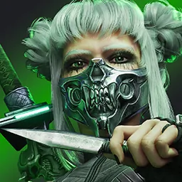

Patch 1.17 — Bloodtide
Released 2026-09-22 · Scout overview, predictions · official notes ↗
TL;DR — what actually changes how the game plays
Baron Valmont brings a second body to the duo lane
His sword Lilith fights on her own and can be thrown at a target. He is a ranged magical carry with a self-healing ultimate and a tether that steals attack speed.
Countess was secretly broken for three weeks
Since 1.16.x her ultimate was dealing its cooldown numbers as damage — 125/105/85 instead of hundreds. Feast returns to 135/200/265, so she goes from quietly unplayable to genuinely dangerous.
Crucible 3v3 is a different game
One lane, a shared jungle, no Gold or Cyan buff, and Raptor Fangteeth that hand out permanent stacking stats with no cap. Expect snowballs that never stop.
Weald finally gets its minors cut
Forage, Wind-Rider and Taproot all lose value while the Major keeps its strength. The devs say they would rather gut the minors than the missiles.
Enchanters lose their cushion
Muriel drops armor growth, regen, shield scaling and ult damage reduction. Phase loses health, passive healing and her level-six spike. Hexbound Bracers and Transference both shed Heal & Shield Power.
Two carries get bigger bullets
Legion and TwinBlast both gain 10% basic-attack projectile radius. The stated reason is that automatic-fire carries land a far lower share of their shots without aim assist.
Sieging gets less punishing
Tower Fortification armor no longer stacks on itself, and the grouped-hero bonus falls at every tier. Grouping to take a Tier 2 tower no longer hands the defenders a wall.
Hero changes 4 meta-shifting · 13 notable · 6 minor · bugfix-only heroes excluded
 ▲
Countess
▲
Countess
 ▼
Muriel
▼
Muriel
 ▼
Phase
▼
Phase
 ✦
Baron Valmont
✦
Baron Valmont
 ▲
Gadget
▲
Gadget
 ▲
Kira
▲
Kira
 ▲
Legion
▲
Legion
 ▲
Morigesh
▲
Morigesh
 ▲
Murdock
▲
Murdock
 ▲
TwinBlast
▲
TwinBlast
 ▼
Akeron
▼
Akeron
 ▼
Aurora
▼
Aurora
 ▼
Gideon
▼
Gideon
 ▼
Greystone
▼
Greystone
 ▼
Serath
▼
Serath
 ◆
Wukong
◆
Wukong
 ◆
Zinx
◆
Zinx
 ▲
Kwang
▲
Kwang
 ▼
Crunch
▼
Crunch
 ▼
Feng Mao
▼
Grux
▼
Feng Mao
▼
Grux
 ▼
Yin
▼
Yin

▼ Yurei4 heroes
full page ↗
Countess
midlane
▲ Buff
- Attack speed 110 -> 115
- Feast bugfix: damage 125/105/85 -> 135/200/265 — since 1.16.x the ultimate had been dealing its cooldown values as damage
WhySince 1.16.x Feast had been dealing its own cooldown values as damage, 125/105/85, so the ultimate got weaker every time it was ranked up. It now deals 135/200/265, and attack speed goes 110 to 115.
What it'll changeHer recorded 47.8% over 31,219 ranked games understates her, because that figure was set while Feast was dealing its cooldown values as damage. Feast suppresses the target and applies Haemorrhage, and the follow-up damage bonus now lands on a leap that actually kills, so the dive is a real finisher again. Expect the sharpest climb on this patch from the 48.1% over 13,887 midlane games, and expect her ban rate to move before her win rate does.
Sim read (pre-1.17): top field core Magical Skirmisher — Combustion, Noxia, Wraith Leggings · 51.7% wr · 381 games
full page ↗
Muriel
support
▼ Nerf
- Physical armor growth 5.5 -> 5.1, health regen 1.8 -> 1.6, mana growth 55 -> 52
- Sentinel heal & shield power 12-20.5% (+0.5 per level) -> 10-16.8% (+0.4% per level)
- Alacrity shield magical power scaling 60% -> 50%
- Reversal Of Fortune damage reduction 35% -> 30%, mana cost 100 -> 100/125/150
- Consecrated Ground bugfixes: it no longer deals or heals 10% more than intended
WhyEverything she gives away shrinks at once. Sentinel's healing and shielding boost goes 12-20.5% to 10-16.8%, and Alacrity's shield magical power scaling goes 60% to 50%. Reversal Of Fortune falls to 30% damage reduction while its mana cost rises to 100/125/150, and her armor growth goes 5.5 to 5.1.
What it'll changeShe is one of the strongest support lines here at 52.8% over 17,812 ranked support games, and this is the patch correcting that. The ultimate is a real cost at higher ranks now, so save the flight for a fight the team can turn rather than an early-lane bail-out. Expect the largest support fall of the patch, with Hexbound Bracers and Transference both dropping to 8% Heal & Shield Power pushing the same way.
Sim read (pre-1.17): top field core Magical DPS Carry — Marshal, Crystal Tear, Windcaller · 53.2% wr · 353 games
full page ↗
Phase
support
▼ Nerf
- Health 670 -> 660
- Essence Catalyst healing 12-80 (+4 per level) -> 10-61 (+3 per level)
- Hyperflux attack speed 40%/60%/80% -> 35%/55%/75%
WhyEssence Catalyst is her free sustain on every cast, and it drops from 12-80 healing (+4 per level) to 10-61 (+3 per level), replicated on the linked ally. Hyperflux falls to 35%/55%/75% attack speed and health goes 670 to 660.
What it'll changeThe support baseline is 51.1% over 35,111 ranked games, almost all of her play. The level-six spike she hands the linked carry is smaller, so time fights around the carry's own item power instead of treating Hyperflux as the window on its own. Expect a fall toward even, made sharper because Hexbound Bracers and Transference both lose Heal & Shield Power in the same patch.
Sim read (pre-1.17): top field core Magical Bruiser (Mixed-Def) — Marshal, Enmas Blessing, Galaxy Greaves · 54.2% wr · 936 games
full page ↗
Baron Valmont
carry
✦ New
- NEW HERO — ranged magical carry. 685 health (+133), 400 mana (+60), 49 physical power (+4), 125 attack speed (+1.7), 665 movement speed, BAT 1.4.
- Hemophagia (passive): his sword Lilith independently attacks the last target he hit for 4s, dealing 15 (+15% magical power) per strike at his attack speed. Enemy deaths near Lilith restore 3-41 mana; hero deaths restore an extra 35% max mana.
- Rupture (primary): 5 blood blades launch over 0.75s for 20/29/38/47/56 (+15% magical power) each in a 300u radius.
- Bloodbound (secondary): throws Lilith up to 1800u for 70/90/110/130/150 (+60% magical power) and a 30% slow for 1.5s; passively adds 0/8/16/24/32 to her damage.
- Arterial Grip (alternate): a 1600u tether dealing 80/120/160/200/240 (+60% magical power) over 3s while stealing 20/25/30/35/40% attack speed, slowing 25% and grounding. Breaks on range, line of sight or immobilize.
- Exsanguinate (ultimate): transforms to fire 3 bat swarms a second for 40/70/100 (+22% magical power), healing 25/45/65 (+20% magical power) each time. Costs 15 mana per second, rising 5 per second. Cooldown 25/15/5s.
- Augments: Vein Splitter (tether branches to nearby targets for 80% damage, loses the ground), Rupturing Fangs (blades deal 20% less but up to 100% more on missing health), Sanguine Banquet (2% omnivamp plus permanent max mana from nearby deaths).
WhyHis sword Lilith is a second attacker: after he hits a target she keeps striking it on her own for 4s at 15 (+15% magical power) per swing, at his attack speed. Bloodbound throws her up to 1800u for 70/90/110/130/150 (+60% magical power) with a 30% slow, and Arterial Grip tethers for 80/120/160/200/240 (+60% magical power) over 3s while stealing 20/25/30/35/40% attack speed.
What it'll changeHe has no ranked history, so this is a read on the kit only. The tether is the hero, and it breaks on range, line of sight or an immobilize. The counter is a wall, a dash or a stun. Exsanguinate heals 25/45/65 (+20% magical power) per swarm. It burns 15 mana a second, rising 5 a second, so it cannot be held long on a 400 mana pool. Expect him to look oppressive in the duo lane for a week, then settle once the tether break becomes reflex.
Notable 13 heroes
full page ↗
Gadget
midlane
▲ Buff
Notable
- Sticky Mine empowered damage 110/150/190/230/270 -> 110/155/200/245/290
- Security Gate allied decaying movement speed 40% -> 50%, mana cost 65 -> 75
WhyEmpowered Sticky Mine rises at every rank past the first, 110/150/190/230/270 to 110/155/200/245/290, so the Spark-into-mine pattern does more damage as she levels. Security Gate's allied decaying movement speed goes 40% to 50%, and its mana cost goes 65 to 75.
What it'll changeThe main seat sits at 50.2% over 28,997 ranked midlane games. The mine only reaches the bigger number when Spark damages the attached target first, so the auto before the detonation is now worth real damage and is worth drilling. Expect a small rise in mid, and expect the 51.4% over 5,414 support games to gain more, since the faster gate is a peel and engage tool for the whole team.
Sim read (pre-1.17): top field core Magical Frontline — Azure Core, Entropy, Overseer · 50.0% wr · 251 games
full page ↗
Kira
carry
▲ Buff
Notable
- Physical power 54 -> 53, growth 3.5 -> 3.7
- Dusk now refunds 35% of its mana if it kills any target (once per cast)
- Mercy damage 20/25/30/35/40 -> 25/30/35/40/45
WhyMercy gains 5 damage at every rank, 20/25/30/35/40 to 25/30/35/40/45, and it crits and applies on-hit effects, so the flat rise is multiplied by her items. Dusk now refunds 35% of its mana on a kill, and the power trade of 54 base to 53 with growth 3.5 to 3.7 means she starts lower and finishes higher.
What it'll changeThe carry baseline is 49.1% over 30,083 ranked games. The mana refund removes the old choice between clearing a wave with Dusk and holding mana for the next fight, so use it on the wave when the kill is there. Expect a rise of about a point, with the Solaris into Ashbringer into Imperator crit line at 56.5% over 744 games staying the default.
Sim read (pre-1.17): top field core Crit DPS Carry — Solaris, Ashbringer, Imperator · 56.5% wr · 744 games
full page ↗
Legion
carry
▲ Buff
Notable
- K-75 Storm Rifle projectile hitbox radius increased 10%
WhyThe K-75 Storm Rifle's projectile hitbox radius goes up 10%. It is an automatic-fire rifle with no aim assist, so a wider bullet turns directly into a higher share of shots landing on a moving target.
What it'll changeThe carry baseline is 51.0% over 43,696 ranked games, the healthier of the two automatic-fire carries getting bigger bullets. Nothing in his rotation changes, so the same spacing simply produces more damage, and the stated reason for the change is that automatic-fire carries land a far lower share of their shots. Expect a modest rise of under a point, with the Malady into Vanquisher into Deathstalker line at 56.9% over 1,357 games unchanged.
Sim read (pre-1.17): top field core Lethality DPS Carry — Malady, Vanquisher, Deathstalker · 56.9% wr · 1,357 games
full page ↗
Morigesh
midlane
▲ Buff
Notable
- Health regen 1.3 -> 1.5
- Hive cooldown 14/13/12/11/10 -> 12/11.25/10.5/9.75/9
- Mark cooldown 8/7.25/6.5/5.75/5 -> 8.5/7.5/6.5/5.5/4.5
- Curse damage 300/430/560 -> 320/450/580
WhyHive's cooldown drops at every rank, 14/13/12/11/10 to 12/11.25/10.5/9.75/9, Curse goes 300/430/560 to 320/450/580, and health regen goes 1.3 to 1.5. Mark trades a slower first rank, 8 to 8.5, for a faster max rank, 5 to 4.5.
What it'll changeThe midlane line is the weakest mid mark on this board at 45.8% over 15,818 ranked games, against 54.0% over 3,603 offlane games. The faster Hive is the part that matters, because clearing the wave and poking the lane opponent now come around on the same rotation. Expect the mid number to climb a point or two toward even, and expect the offlane version to stay the stronger pick.
Sim read (pre-1.17): top field core Magical Frontline — Combustion, Lifebinder, Megacosm · 45.2% wr · 250 games
full page ↗
Murdock
carry
▲ Buff
Notable
- Shots Fired total physical power scaling 36%/44%/52%/60% -> 40%/48%/56%/64%
- Buckshot damage 60/85/110/135/160 -> 60/90/120/150/180
- Long Arm of the Law damage 250/400/550 -> 280/430/580, bonus physical power scaling 115% -> 120%
WhyAll three of his damage sources go up at once. Shots Fired charged-attack scaling goes 36%/44%/52%/60% to 40%/48%/56%/64%, Buckshot goes 60/85/110/135/160 to 60/90/120/150/180, and Long Arm of the Law goes 250/400/550 to 280/430/580 with bonus physical power scaling 115% to 120%.
What it'll changeThe carry baseline is 46.8% over 33,732 ranked games, the lowest carry line here. The charged shot and Long Arm of the Law both reward holding range. Buckshot loses damage the further out it lands, so fire it up close for its armor shred just before the charged attack rather than throwing it as poke. Expect the biggest carry gain of the patch, plausibly a point or two, and probably still short of even.
Sim read (pre-1.17): top field core Crit Burst — Lightning Hawk, Vanquisher, Imperator · 56.5% wr · 1,183 games
full page ↗
TwinBlast
carry
▲ Buff
Notable
- Lunari 4.0 projectile hitbox radius increased 10%
WhyLunari 4.0 fires two projectiles per attack, and both get a 10% larger hitbox radius. The change compounds on a basic attack that is already two bullets, and on Gunslinger's three-shot follow-up after every cast.
What it'll changeThe carry baseline is 48.4% over 34,014 ranked games. Nothing in his rotation changes, so the gain is purely in hit rate against a strafing target, which is where his damage has always leaked. Expect a small rise, likely under a point, with the Solaris into Ashbringer into Imperator crit line at 51.9% over 552 games still the build.
Sim read (pre-1.17): top field core Crit DPS Carry — Solaris, Ashbringer, Imperator · 51.9% wr · 552 games
full page ↗
Akeron
offlane
▼ Nerf
Notable
- Hellfire magical power scaling 16% -> 14%
- Web Lash: Web Shot and Leap magical power scaling both 35% -> 30%
- Crushing Maw magical power scaling 40% -> 35%, bonus health scaling 4% -> 4.5%
- Consume pull damage magical power scaling 5% -> 4%
WhyEvery magical power line comes down at once: Hellfire 16% to 14%, both halves of Web Lash 35% to 30%, Crushing Maw 40% to 35% and the Consume pull 5% to 4%. The one thing going up is Crushing Maw's bonus health scaling, 4% to 4.5%, which shifts him away from raw power.
What it'll changeThe baseline is 48.5% over 15,819 ranked games, with the main seat at 49.7% over 11,002 offlane games. Crushing Maw loses magical power scaling, 40% to 35%, and gains bonus health scaling, 4% to 4.5%, so health items cost him less damage than they used to. Expect a drop of under a point in the offlane, and expect the 45.3% jungle line over 3,423 games to get worse, because clearing leans hardest on Hellfire.
Sim read (pre-1.17): top field core Magical Burst — Magnify, Tainted Scepter, Truesilver Bracelet · 50.7% wr · 76 games
full page ↗
Aurora
jungle
▼ Nerf
Notable
- Shatter on-hit magical power scaling 30% -> 25%
WhyShatter is her basic attack, and its on-hit magical power scaling falls 30% to 25%. Every auto does less as she stacks power, which is the part of her damage that never misses.
What it'll changeThe jungle line is 53.3% over 19,147 ranked games, the strongest of her three seats. Her abilities are untouched, so open with Hoarfrost for the root and Boreal Sweep for the slow instead of trying to win a long auto-attack trade. Expect the jungle number to drift toward her 50.7% over 16,649 offlane games, though a point would be a large move from a single scaling cut.
Sim read (pre-1.17): top field core Magical Bruiser (Mixed-Def) — Magnify, Elafrost, Flux Matrix · 52.1% wr · 249 games
full page ↗
Gideon
midlane
▼ Nerf
Notable
- Event Horizon augment max-health damage 5% -> 4%
- Cosmic Power bonus max mana now 1% per 20 magical power (was per 15)
- Void Breach damage 100/140/180/220/260 -> 90/130/170/210/250; cooldown progresses 1% faster per 100 max mana (was per 80)
- Black Hole damage 520/780/1040 -> 500/760/1020
- Torn Space bugfix: no teleport while hit by a ground effect
WhyThree damage lines fall together: Void Breach 100/140/180/220/260 to 90/130/170/210/250, Black Hole 520/780/1040 to 500/760/1020, and the Event Horizon augment's max-health damage 5% to 4%. The mana engine also slows, with bonus max mana now 1% per 20 magical power instead of 15 and Void Breach's cooldown progressing 1% faster per 100 max mana instead of 80.
What it'll changeHe holds the biggest midlane sample on this board at 52.0% over 57,247 ranked midlane games. The mana stacking that carried his late game needs more magical power for the same return, so the Azure Core opening in his 57.6% build over 1,260 games matters more than before. Expect him to settle near even, down roughly a point, and still a comfortable blind pick.
Sim read (pre-1.17): top field core Magical Burst — Azure Core, Combustion, Wraith Leggings · 57.6% wr · 1,260 games
full page ↗
Greystone
offlane
▼ Nerf
Notable
- Base health 690 -> 680
- Armor growth 5.4 -> 4.8
WhyBase health goes 690 to 680 and armor growth goes 5.4 to 4.8. The health loss is trivial; the armor growth is the real cut, because the gap widens with every level and he is hardest to kill late.
What it'll changeHe is the strongest line on this board at 54.7% over 58,834 ranked offlane games, so this is a trim rather than a correction. Physical offlaners get a genuine window now, so trade harder in the levels before his Overlord into Rapture into Aegis Of Agawar core comes online, which measured 55.7% over 542 games. Expect a fall of under a point, and expect him to stay a top-tier offlane pick.
Sim read (pre-1.17): top field core Physical Bruiser — Overlord, Rapture, Aegis of Agawar · 55.7% wr · 542 games
full page ↗
Serath
jungle
▼ Nerf
Notable
- The Nephilim bonus physical power scaling 70% -> 75%, magical on-hit total physical power scaling 15% -> 10%
- Heresy burn bonus physical power scaling 25% -> 20%, burn damage 14/27/40 -> 14/26/38
WhyHer sustained damage is what gets cut. The Nephilim's magical on-hit total physical power scaling goes 15% to 10%, and Heresy's burn goes 14/27/40 to 14/26/38 with bonus physical power scaling 25% to 20%. The basic attack's bonus physical power scaling rises 70% to 75%, which only pays back behind heavy power items.
What it'll changeThe jungle line is 51.9% over 40,852 ranked games, a large and stable sample. The trim lands on long fights inside Heresy, so pick targets she can finish in the opening burst rather than committing to duels that go the distance. Expect a fall of under a point, and note the on-hit Sky Splitter line at 58.8% over 612 games loses the most from the 15% to 10% cut.
Sim read (pre-1.17): top field core On-Hit Drain — Sky Splitter, Storm Breaker, Spectra · 58.8% wr · 612 games
full page ↗
Wukong
jungle
◆ Mixed
Notable
- Health 680 -> 665, physical armor 30 -> 28, magical armor 33 -> 31, attack speed 110 -> 115
- Ruyi Jingu Bang cleave 15% -> 20%
- High Impact minion damage modifier -60% -> -70%
- Windsurge damage 60/90/120/150/180/210 -> 60/85/110/135/160/185, bonus physical power scaling 90% -> 100%, mana cost 50 -> 50/55/60/65/70/75
- 84000 Hairs clone kill gold 5 -> 7
- From Up High augment: height damage raised at every band, 2000u 1.7x -> 1.76x up to 9000u 1.875x -> 2.1x
WhyHe trades durability for output. Health goes 680 to 665, physical armor 30 to 28 and magical armor 33 to 31, against attack speed 110 to 115 and Ruyi Jingu Bang cleave 15% to 20%. Body Windsurge gives up flat damage for bonus physical power scaling 90% to 100%, and High Impact's minion damage modifier falls -60% to -70%.
What it'll changeThe jungle baseline is 48.1% over 6,834 ranked games, the smallest sample among the reworked heroes here. The extra cleave and attack speed reward clearing and skirmishing, while the armor cut punishes a bad engage, so take fights with clone stacks ready rather than alone. Expect a rise of around a point for players who build power and run From Up High, which now reaches 2.1x at 9000u.
Sim read (pre-1.17): top field core Physical Frontline — Mindrazor, Augmentation, Painweaver · 46.7% wr · 58 games
full page ↗
Zinx
support
◆ Mixed
Notable
- Attack speed 110 -> 115, BAT 1.4 -> 1.5
- Infuse missing-health healing modifier 40% -> 50%
- Neural Regenesis cooldown 160/140/120 -> 150/135/120
- Disc Of Demise ricochet cooldown reduction 10% -> 12% on heroes, 5% -> 6% on non-heroes
- Terminal Treatment additional DoT damage 35% -> 25%
WhyHer attacks slow down, with the time between basic attacks (BAT) rising 1.4 to 1.5 against attack speed 110 to 115, and Terminal Treatment's extra damage over time falls 35% to 25%. The healing half gains instead. Infuse's missing-health modifier goes 40% to 50%, Neural Regenesis drops to 150/135/120, and Disc Of Demise's ricochet cooldown reduction rises to 12% on heroes.
What it'll changeThe support line is 46.8% over 30,107 ranked games, the weakest support mark on this board and the seat she is played in most. The healing change rewards holding Infuse until the ally is genuinely low, and the better ricochet cooldown rewards aiming the disc through several bodies instead of the nearest one. Expect a rise toward even for the healing build, and expect the damage-leaning setups to lose more than they gain.
Sim read (pre-1.17): top field core Magical Burst — Prophecy, Spectra, Orion · 49.8% wr · 500 games
Minor 6 heroes
full page ↗
Kwang
offlane
▲ Buff
Minor
- Judgement Of The Heavens bugfix: he can now pick up his sword while grounded
WhyBeing grounded used to block picking his blade back up, which stranded him without the recall on Judgement Of The Heavens. He can now retrieve it while grounded.
What it'll changeThe offlane baseline is 49.0% over 14,546 ranked games. A grounding effect no longer locks the sword on the floor, so the dash-into-blade knock-up stays available in exactly the fights where it was disappearing. Expect no movement in the number now, though it matters more from tomorrow, since Baron Valmont's Arterial Grip grounds for up to 3s and breaks only on range, line of sight or an immobilize.
Sim read (pre-1.17): top field core Magical Burst — Spirit of Amir, Oathkeeper, Tainted Scepter · 50.0% wr · 100 games
full page ↗
Crunch
offlane
▼ Nerf
Minor
- Forward Crunch bugfix: the empowered version is now correctly interrupted by a ground effect
WhyTurbo Crunch's empowered Forward Crunch used to push through ground effects on the way in. It is now interrupted like any other dash.
What it'll changeThe offlane baseline is 48.0% over 19,323 ranked games. The long Turbo engage through a Gideon or Gadget zone no longer completes, so wait the zone out or come in from an angle it does not cover. Expect no measurable movement in the number; this costs a couple of forced engages a game against the right lineups.
Sim read (pre-1.17): top field core Physical DPS Carry — Augmentation, Mutilator, Tainted Blade · 51.1% wr · 46 games
full page ↗
Feng Mao
jungle
▼ Nerf
Minor
- Reaping Dash bugfix: he can no longer teleport while hit by a ground effect
WhyReaping Dash is a blink, and it used to complete even while a ground effect was on him. A ground effect now stops it.
What it'll changeThe jungle baseline is 48.1% over 20,393 ranked games. Treat the dash as an entry tool rather than the escape out of a zoned fight, because the exit is the cast that now gets denied. Expect the number to hold flat; this removes an escape that only existed against specific zone heroes.
Sim read (pre-1.17): top field core Lethality DPS Carry — Malady, Painweaver, Omen · 51.2% wr · 241 games
full page ↗
Grux
offlane
▼ Nerf
Minor
- Stampede bugfix: now correctly interrupted by a ground effect
WhyStampede drags enemy heroes along its path, and the dash is now correctly interrupted by a ground effect. The drag ends where the interrupt lands.
What it'll changeThe offlane baseline is 51.5% over 34,877 ranked games. When the ground under the fight is covered, open with the Smash 'n Grab channel pull instead, since it is not a dash and cannot be cut the same way. Expect no visible change; this closes one route into a zoned fight, not the hero.
Sim read (pre-1.17): top field core Physical Bruiser — Sky Splitter, Basilisk, Rapture · 58.8% wr · 305 games
full page ↗
Yin
jungle
▼ Nerf
Minor
- Lash Kick bugfix: now correctly interrupted by a ground effect
WhyLash Kick attaches her whip and dashes her to the spot, and a ground effect now correctly interrupts it. The dash and the leap that follows can both be denied.
What it'll changeThe jungle line is 50.6% over 14,170 ranked games, her lowest seat, against 52.2% over 4,066 offlane games and 53.2% over 1,087 carry games. The gap-close into covered ground is no longer free, so commit before the zone lands or take the longer path in. Expect no visible change in the number.
Sim read (pre-1.17): top field core Crit Drain — Sky Splitter, Lightning Hawk, Onixian Quiver · 54.2% wr · 172 games
full page ↗
Yurei
jungle
▼ Nerf
Minor
- Soulstorm bugfix: now correctly interrupted by a ground effect
WhySoulstorm channels a maelstrom and then pulls everything in at the end, and a ground effect now interrupts the channel. Losing the channel loses the pull, which is the payoff of the whole ultimate.
What it'll changeThe jungle baseline is 48.4% over 12,798 ranked games, against 53.1% over 2,025 offlane games. Cast the ultimate from ground the enemy zone cannot reach, because the value is entirely in the pull at the end. Expect the number to hold; this costs a handful of ultimates rather than a role.
Sim read (pre-1.17): top field core Lethality Skirmisher — Malady, Spear of Desolation, The Perforator · 46.6% wr · 260 games
Eternals (draft blessings)
No new Eternals. This is a targeted pass at the two that shaped 1.16: Weald's minors come down again, and the ultimate-uptime blessings gain cooldowns specifically because Valmont's ultimate can be held up almost continuously. Satariel keeps getting walked back.
tap an Eternal to jump to its change
 Weald
▼ Nerf
Weald
▼ Nerf
- Major bugfix: missiles now fire correctly on proc-type damage. Forage XP on minion and monster kill 4 -> 3. Wind-Rider attack speed 20% -> 15%. Taproot bonus physical power 8% -> 7%, and it no longer heals off tower damage.
MeaningSecond straight trim, and again aimed at the minors rather than the missiles. Weald still executes; it just pays less rent while you get there.
 Thraex
▼ Nerf
Thraex
▼ Nerf
- Rallying Roar now has a 20s cooldown.
MeaningAn explicit Valmont tax. His ultimate can stay up almost continuously, so the on-ultimate speed burst needed a floor between uses.
 Knell
▼ Nerf
Knell
▼ Nerf
- Peal now has a 20s cooldown.
MeaningSame reason as Rallying Roar. Peal's max-Rust burst on every ultimate was the engine behind Knell's ultimate-spam builds.
 Vesh
▼ Nerf
Vesh
▼ Nerf
- Lich magical lifesteal 5%/8%/12%/16% -> 4%/7%/10%/14% at levels 1/6/11/16.
MeaningThird consecutive cut to the same minor. Mage lane sustain keeps getting pushed later into the game.
 Aion
◆ Mixed
Aion
◆ Mixed
- Sacrifice bugfix: it no longer grants excessive mana regeneration in ARAM and Brawl.
MeaningA mode-only fix — the devs describe it as having paid out over 100 times the intended mana there. Nothing changes in the 5v5 lane.
 Satariel
▼ Nerf
Satariel
▼ Nerf
- Major bonus stats per Fearless stack 5% -> 4%. Demonic Bargain gold payouts move from levels 1/7/13 to levels 1/10. Hellfire Strikes true damage 1.5 (+1.5 per level) -> 1.5 (+1.25 per level).
MeaningThe snowball Eternal is trimmed at the source and at the wallet. Losing a payout tier means a behind Satariel stays behind.
Items
tap an item to jump to its change
Terminus
▲ Buff
Bugfix: the shield could be fully removed after taking damage, and every later shield was then capped lower.
Cost 2900 -> 3000; magical armor 35 -> 40; Heal & Shield Power 10% -> 8%. Better for the frontliners it was built for, worse for enchanters poaching it.
Hexbound Bracers
▼ Nerf
Heal & Shield Power 10% -> 8% — the enchanter durability pick costs more output now.
Typhoon
▼ Nerf
Cyclone attack speed magical power scaling 3.5% -> 3%; Mirage Dash cooldown 35s -> 45s — the magical on-hit crest loses both damage and escapes.
Systems & map
Tower Fortification
Temporary plating armor no longer stacks — it is removed and reapplied on each new plate. Bonus armor with 3 nearby heroes 220 -> 200, with 4 heroes 300 -> 260, with 5 heroes 400 -> 330.
Crucible 3v3 (new mode)
Single lane plus jungle, core-destruction win condition. Gold and Cyan buffs removed, Orb Prime removed with its buff folded into Shaper (spawns 10:00), Fangtooth replaced by 3 Raptor Fangteeth every 3 minutes whose kills grant permanent +2% to all stats with no stack limit. Start level 1 with 350 gold, blink on 150s, 100% jungle XP share.
Crucible map tools
Full air-control geysers for fast rotations, gold plants (40s, respawn 80s), speed plants (5s, respawn 80s), bounce pads toward the Shaper pit, channeled health packs, and stealth bushes.
Draft fixes
Five draft bugs fixed, all Eternal-related: swapping pick position could reset Eternals and augments, auto-locking could switch your Eternal, the wrong Eternal could display and register on a different hero, ban choices could become your hovered pick, and controller users had selection jump to the minor blessing.
Generated from
data/patches/1.17.json +
data/aggregates/patch-1.17-predictions.json by
scripts/build-patch-page.js. Predictions authored on session compute (no API) and
grounded in the stated change numbers. Measured results (when shown) come from the ranked
match feed: pre-patch baseline vs the patch-to-date window (dates in the predictions file's measured.source).